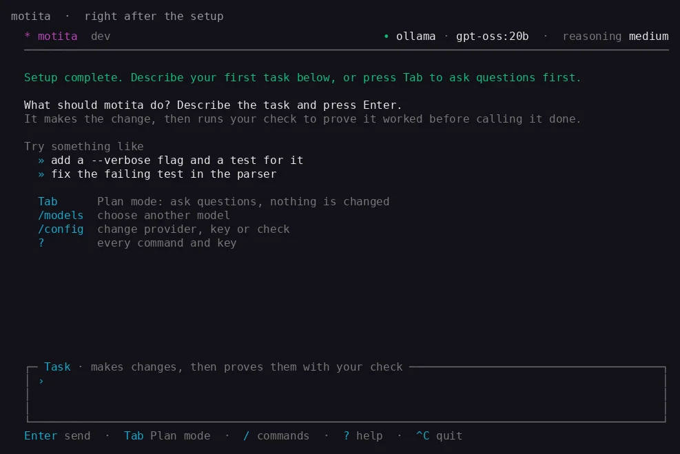

The terminal interface
The full-screen interface you get by typing motita.
Run motita with no arguments and you get a complete terminal interface, written against the Go standard library alone.

What you see
- Who is answering. One line names the provider and model and how hard it thinks. If there is no key, it says so in words and tells you how to add one.
- What Enter will do. The input box is titled with its mode. Task makes changes and proves them with your check. Plan only reads and explains. Tab switches.
- The keys that work now. The footer changes as you type a command, while a task runs, or while you scroll back.
Staying in control
- Esc stops the running task.
- A message typed while the agent works is queued and sent when it finishes.
/opens the command list.?shows every command and key. A plain word is always a message, so typingnewnever runs a command by accident.- A failed turn shows the error as it happened plus a hint for the first things newcomers meet: Ollama not running, a refused key, an unknown model, a rate limit.
Commands worth knowing
| Command | What it does |
|---|---|
/config | Run the setup again. |
/models | List and switch the model for this conversation. |
/sessions, /attach, /new, /back | See, join, open and leave conversations. A run keeps going while you look at another one. |
/agents (Ctrl+G) | The background agents and what each is doing. |
/good, /bad | Tell motita whether the last procedure helped. |
/git | Connect GitHub, GitLab or Bitbucket. |
/artifacts | Files the agent saved in this conversation. |
/language | Switch between English and Spanish at once. |
/update | Install the newest release. |
Language
The terminal, the browser and the setup speak English or Spanish. By default they follow your system language; ui.language or /language chooses one for every interface.